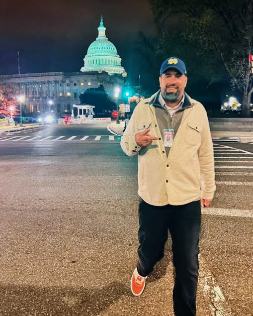

Daily Press Gallery — Standing Committee of Correspondents — January 2027
The Capitol press gallery has been self-governing since 1887 because someone, generation after generation, decided it was worth fighting for. I'm asking you to let me be that person for the next two years.

The Campaign
Getting on the ballot requires 15 signatures from gallery members — I now have seventeen and counting. It also requires that the outlet running be in good standing for at least 18 months. Migrant Insider hits that mark on October 1st. I'll submit my signatures in December.
In January, you'll choose three of us to represent you for two years as the only self-governing capital press gallery in the world. My aim is to earn your vote.
I am among a handful of reporters in Capitol press history credentialed in three of the four press galleries. I know the rules, regulations, rosters, customs, and traditions of the Daily, Periodical, and Radio-TV galleries. No one is better positioned to fight proactively for your press freedoms. No one is more obsessed with making our workspaces worthy of the work we do here.
01
Lift smartphone filming restrictions in Senate tunnels. Press access to the members' balcony. Working with House and Senate committees on access — as Standing Committees have for over a century.
Read more →02
Potted plants from the U.S. Botanical Garden — brokered with the Architect of the Capitol — for both the Senate Daily Press Gallery and the Frederick Douglass Press Gallery.
Read more →03
The Frederick Douglass Press Gallery should celebrate its history — Douglass, Lautier, Dunnigan, Royall, Twain, Fuller, and Standing Committee Chairs of yore — the way the Speaker's Lobby celebrates House Speakers.
Read more →On Credentialing
Credentialing is the biggest responsibility of any Standing Committee — gatekeeping against lobbyists, spies, charlatans, and wannabes was the original impetus for creating the committee in the first place. I take it seriously.
That said: more is more. The Capitol press corps is greatly diminished from its heyday. Fewer press on the pitch is a problem for democracy and for us. I commit to voting with my fellow committee members on new outlet credentialing, approaching each case diligently and without ego. My first priority, though, will always be the press freedoms of existing Daily Press Gallery members.